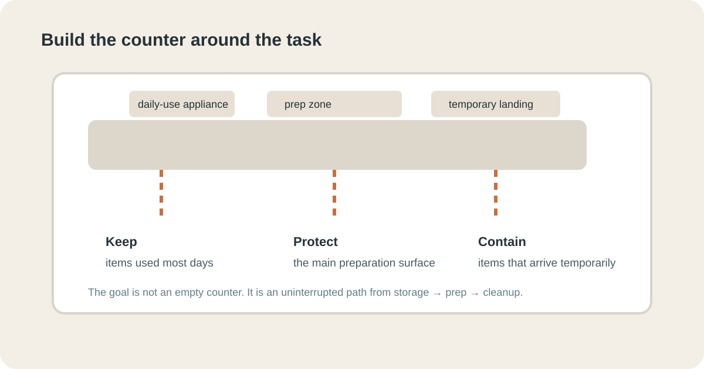
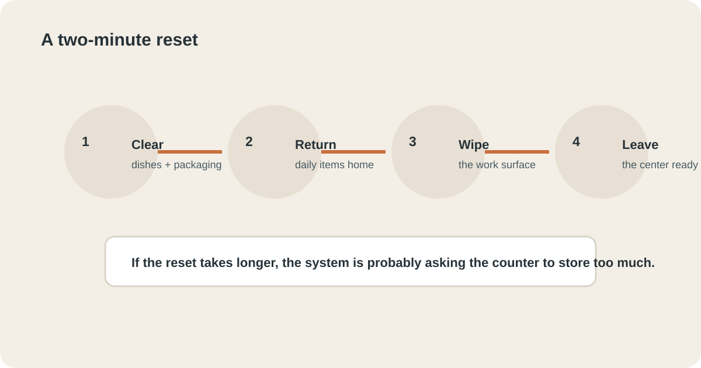

STORAGE & ORGANIZATION · KITCHEN
Kitchen Counter Zone That Stays Clear
If your kitchen counter becomes a parking lot for appliances, mail, cups and half-finished tasks, do not start by organizing everything. Pick one working zone and make it easy to clear. A defined preparation surface, fewer permanent residents and a two-minute reset can solve much of the daily mess.


1. Choose one clear working zone
Do not attempt to create a perfect empty kitchen. Choose the section of counter where food is prepared most often. It might be beside the sink, next to the stove or near the cutting board. The purpose is practical: you need one place where ingredients, a board and a knife can appear without first moving six unrelated objects.
Measure success by whether the zone can become usable quickly. If it takes ten minutes to clear, the system is too difficult. The first goal is not visual minimalism; it is reliable access to a useful surface.

2. Give every permanent item a reason
Look at what currently lives on the counter. For each object, ask three questions: Do we use it most days? Does leaving it here save a meaningful step? Does it make the working surface harder to use? If an item fails the first two questions and creates friction, it probably belongs elsewhere.
This is especially useful for small appliances. A toaster or coffee maker used every morning may deserve a permanent position. A waffle maker used twice a month usually does not. The answer depends on the household, not an organizing rule from a magazine.

3. Create a home for loose daily items
Clutter often survives because the item has nowhere convenient to go. Receipts, lunch containers, keys and reusable bottles become permanent counter residents when returning them requires walking to three different rooms.
Give recurring loose items one nearby destination. A small tray can collect receipts until they are processed. A basket can hold reusable bags. A cabinet shelf can be the home for lunch containers. The container is not the solution by itself; the useful part is that it creates a predictable return point.
4. Reduce duplicates before buying organizers
Before purchasing bins, inspect duplicates. Three sets of measuring cups, several travel mugs or multiple open packets of the same ingredient consume more space than a clever organizer can recover.
Choose the version that is easiest to use and remove the obvious duplicates from the active zone. They can be donated, stored elsewhere or kept only if they serve a real occasional purpose. Decluttering first makes every later organizing decision easier.
5. Protect the main preparation path
Imagine preparing a normal meal from start to finish. Where do ingredients arrive? Where is the cutting board? Where does waste go? Where do clean dishes wait? The clear zone should support this sequence rather than force you to move objects repeatedly.
If the bin, drying rack or appliance blocks the path, test a new position for a week. Sometimes the best organization improvement is moving one object six inches. Small layout changes can be more valuable than buying storage products because they remove repeated friction.
6. Use vertical space selectively
When counter space is limited, look above and below it. A wall rail, cabinet door organizer or shelf can hold a small category that does not need to occupy the worktop. The key word is selectively. Filling every available wall with hooks simply moves visual clutter upward.
Choose one category that genuinely benefits from being accessible. Frequently used utensils, a small collection of mugs or a paper towel roll may work. Keep rarely used items out of the active zone entirely.
7. Make the two-minute reset obvious
A reset works when you know exactly what to do. At the end of the day, return appliances to their positions, move loose objects to their homes, wipe the main work surface and remove anything that belongs elsewhere. Do not start reorganizing cabinets during this routine.
- Clear dishes and food packaging.
- Return the few permanent tools to their zones.
- Move loose objects to their defined homes.
- Wipe the main preparation surface.
- Leave the center clear for tomorrow.

The routine should feel almost boring. That is a feature. If the reset requires decisions every evening, it will eventually be skipped.
8. Keep food and paperwork from competing for space
Kitchen counters often become household administration desks because the room is convenient. Mail, school papers and delivery packaging then compete with food preparation. Create a different landing zone for paperwork, even if it is a small wall pocket or tray outside the main cooking area.
Likewise, unopened groceries should have a clear temporary destination. If everything lands on the counter while you unload bags, the reset should include putting food away before another activity begins. The goal is not to move clutter from one surface to another indefinitely; it is to give each category a real home.
9. Test the system during the busiest meal
A system that works on a quiet Sunday may fail on a rushed weekday. Test the clear zone when you are tired and preparing a normal meal. Notice what gets placed on the counter because the system is inconvenient.
Those objects are evidence. If the same item repeatedly lands in the wrong place, either its home is too far away or the category needs a better container. Adjust the system around real behavior instead of trying to force the household to behave differently.
10. Fix the repeat offender instead of reorganizing everything
After three or four normal days, look for the first object that repeatedly returns to the counter. That object is your best diagnostic clue. If it is a blender used every morning, its permanent position may be justified. If it is unopened mail, the kitchen is probably missing a better paperwork landing zone. If it is a collection of chargers, the problem belongs to a different storage system.
Change one thing at a time. Move the repeat offender closer to its real home, create a small container only when it solves a specific problem, or remove the item from the active zone. Then test the change for a week. A system earns its place by reducing repeated work, not by looking organized on day one.
11. Check food-preparation safety before optimizing appearance
A clear counter is useful only if it remains a safe food-preparation surface. Keep cleaning products and unrelated household chemicals away from areas where food is prepared. Give raw-food preparation enough room to stay separate from ready-to-eat foods, and clean the work surface after handling raw meat or other foods that can contaminate it.
The U.S. Department of Agriculture's food-safety guidance is a useful reference when deciding how to arrange and clean a food-preparation zone: USDA safe food handling guidance. The practical point is simple: organization should make safe preparation easier, not merely make the counter look empty.
After one week, check the zone during the busiest meal you normally prepare. If you can place ingredients down, work comfortably, clean up and leave the center ready for tomorrow without moving unrelated objects, the system is doing what it needs to do. Stop there instead of organizing for organization’s sake.
12. Decide what deserves permanent counter space
A useful rule is to reserve permanent space for things that are frequent, bulky or genuinely time-saving. Everything else should have a nearby storage home. This avoids two extremes: a counter covered with appliances and a minimalist counter that forces you to unpack the same useful tools every morning.
For each item you are tempted to leave out, ask: Does this save enough repeated effort to justify the space it occupies? If the answer is no, store it. If the answer is yes, position it so it does not interrupt the main preparation path.
Common mistakes that make counter clutter return
- Buying containers before identifying the repeat offender.
- Keeping every appliance visible because it was expensive.
- Using the counter as a permanent mail office.
- Creating several small “temporary” piles.
- Putting daily-use objects in storage that is technically correct but inconvenient.
- Trying to reset the entire kitchen instead of protecting one useful work zone.
- Adding more storage when the real problem is excess volume.
Frequently Asked Questions
How do I keep my kitchen counters clutter-free?
Give daily-use items a defined zone, remove duplicates, contain loose objects and make the reset shorter than the habit of leaving things out.
What should stay on a kitchen counter?
Keep only items used frequently enough to justify their space and that do not make food preparation harder.
How do I declutter a small kitchen counter?
Start with one working zone, remove rarely used items and move appliances or supplies that interrupt the main preparation path.
Why does my kitchen counter get cluttered again so quickly?
Usually because items lack a convenient home or the surface is being asked to store too many unrelated categories.
How often should I reset the kitchen counter?
A short daily reset is usually easier than a large weekly clear-out, especially when every frequent item has a simple return location.
Where should small appliances live if the counter is tiny?
Keep the appliance you use most often accessible if moving it creates daily friction. Store less frequent appliances in the easiest cabinet or shelf that fits them, and avoid sacrificing the main preparation zone simply to keep every appliance visible.
A clear kitchen counter is not a permanent state of emptiness. It is a working surface that has fewer competing jobs, obvious homes for daily items and a reset that takes minutes rather than an entire weekend.